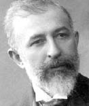

(1867 – 1945)

Batı tarzı Türk edebiyatının ilk önemli yazarlarından Halit Ziya "sanat yapmak" uğruna zaman zaman ağır bir dil kullansa da anlattığı konuların sahiciliği ve anlatımındaki ustalık nedeniyle her zaman en çok okunan yazarlarımızdan biri oldu. "Mai ve Siyah"ın ilk yerli klasik romanımız olduğunu söylemek hiç de yanlış olmayacaktır.
Türk romancılığının ilk ustalarından Halit Ziya Uşaklıgil 1867'de İstanbul'da doğdu. "Uşakizadeler" olarak tanınan İstanbullu bir ailenin oğluydu. Mahalle mektebinden sonra Fatih Rüştiyesi'ne gitti. Tüccar olan babasının işlerinin bozulması üzerine, 1879'da İzmir'e yerleştiler ve yazar İzmir Rüştiyesi'ne girdi. Özel Fransızca dersleri aldı. Avusturyalı Katolik rahiplerin yönettiği Mechitariste Okulu'na devam etti. 1884'te son sınıftan ayrılarak babasının ticarethanesinde çalışmaya başladı. Fransızcadan ilk çevirilerini bu yıllarda yaptı. Tevfik Nevzat ile 1884'te Nevruz dergisini, 1886'da da Hizmet gazetesini yayımladı. İlk romanlarını bu gazetede yayımladı. Okulu bitirdikten sonra bir yandan İzmir Rüştiyesi'nde Fransızca öğretmenliği yaparken bir yandan da Osmanlı Bankası'nda memur olarak çalıştı. 1893'te Reji İdaresi'nde başkatiplik göreviyle İstanbul'a geldi. Hüseyin Siret, Mehmet Rauf, Rıza Tevfik, Hüseyin Cahit, Ahmet Rasim gibi yazarlarla dostluk kurdu ve 1896'da Edebiyat-ı Cedide topluluğuna katılarak Servet-i Fünun dergisinde kendine geniş ün sağlayan romanlarını yayımladı. 1901-1908 arasında yazarlığı bıraktıysa da II. Meşrutiyet döneminde yeniden başladı, ancak yazdıklarını 1923'e kadar yayımlamadı. Bu arada, Darülfünun'da estetik ve Batı edebiyatı dersleri verdi. V. Mehmed'in tahta geçmesi üzerine onun mabeyn başkatipliğine atandı, dört yıl bu görevde kaldı. Daha sonra Reji İdaresi'nde yönetim kurulu başkanı oldu. Son yıllarını, Yeşilköy'deki evinde anılarını yazarak geçirdi.
Uşaklıgil'in İzmir'deyken yazdığı Nemide, Bir Ölünün Defteri, Ferdi ve Şürekâsı gibi ilk yapıtları karşılıksız sevgiyi konu alan, acıklı ve duygusal kısa romanlardır. İstanbul'a geldikten sonra Servet-i Fünun dergisinde yayımladığı Mai ve Siyah (1895) ile acemilik dönemini geride bıraktığı görülür. Daha önceki yapıtlarında ön planda bulunan acıklı aşk serüveni, burada ikinci plana atılmıştır. Şairler, gazeteciler, yayınevi sahipleri ve yazarlar arasında geçen olayları ele aldığı bu romanda, hem o dönemin Bab-ı Ali dünyasını hem de bu dünyanın gerçekleri karşısında yaşama yenik düşen Ahmet Cemil'in hayalci kişiliğinde bütün bir Edebiyat-ı Cedide kuşağının bakış açısını yansıtmıştır. 1898-1900 arasında yazdığı Aşk-ı Memnu (1900) ise ilk büyük Türk romanı kabul edilir. Sağlam bir yapısı ve tekniği olan yapıtta; zengin bir adamla evlenen genç ve güzel bir kadının yaşlıca kocasına sadık kalmak kararına karşın, elinde olmayarak yasak bir aşka sürüklenişi, olayın psikolojik nedenleri üstünde de durularak, gerçekçi bir biçimde anlatılmıştır. Roman, 1975 yılında yönetmen Halit Refiğ tarafından sinemaya uyarlanarak TRT'nin ilk yerli dizisi olarak çekildi ve büyük bir ilgiyle karşılandı. 2000'li yıllarda tekrar televizyona uyarlanan dizi, yine büyük ilgi gördü ve iki yıl boyunca ekranlarda yer aldı.
Uşaklıgil pek çok öykü de yazmış ve Batı tarzı öykü anlayışının Türkiye'de yayılmasında rol oynamıştır. Öykülerinin konusunu ve kahramanlarını daha çok halkın yoksul kesiminden almış, bu insanların acılarını dile getirmeye çalışmıştır. Romanlarında, Uşaklıgil'in ilgi alanı dardır. Kahramanlarını ve onların sorunlarını işlerken sınırlı bir yaşantı çerçevesinin dışına çıkmaz. Duyarlı genç kadın ve erkeklerin aşkta uğradıkları hayal kırıklığı, başlıca teması olmuştur. Ancak aşk konusundaki görüşünün romantiklikten gerçekçiliğe doğru bir değişim geçirdiği gözlemlenir. İlk romanlarında daha platonik ve romantik olan aşk ilişkileri son iki romanında yasak aşkla noktalanan cinsel bir tutkuya dönüşür.
Uşaklıgil, Türk romanının öncüsü sayılmıştır. Çünkü ondan önce, romanı bir sanat yapıtı kabul ederek onun kadar ciddiye alan, bir sanatçı titizliğiyle romanın yapısına ve tekniğine bu denli önem veren başka bir Türk yazar bulmak zordur.
23 Mayıs 1945'te İstabul'da vefat eden Halit Ziya Uşaklıgil'in mezarı Bakırköy'dedir.
Seçme Romanları: Nemide (1889), Bir Ölünün Defteri (1889), Ferdi ve Şürekâsı (1894), Mai ve Siyah (1897), Aşk-ı Memnu (1900), Kırık Hayatlar (1923)